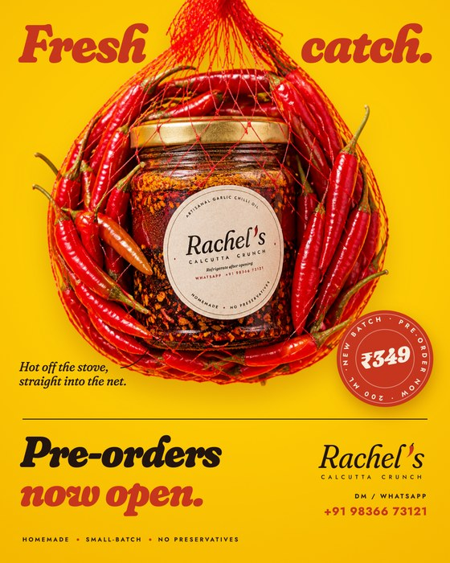
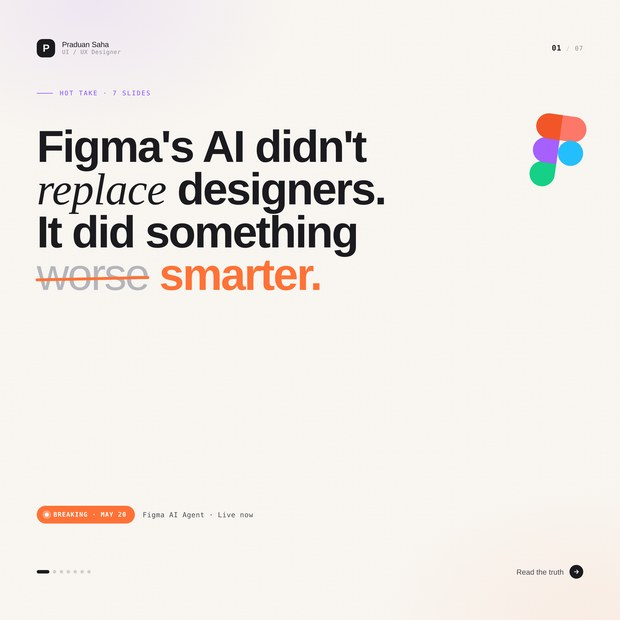

<!doctype html>
<html lang="en">
<head>
<meta charset="utf-8">
<title>Project card</title>
<link href="https://fonts.googleapis.com/css2?family=Bricolage+Grotesque:opsz,wdth,wght@12..96,75..100,200..800&family=Instrument+Sans:wght@400..600&display=block" rel="stylesheet">
<style>
  /* A swatch from the book, at card size: the whole card is the project's own
     colour token (as praduansaha.com sets it), and the work breaks out of it. */
  :root { --ink: #0d0d10; --bone: #f7f0e4; }
  html, body { margin: 0; background: transparent; }
  .card {
    position: relative; width: 400px; height: 380px; box-sizing: border-box; overflow: hidden;
    border-radius: 20px; background: var(--c); color: var(--ink);
    font-family: "Instrument Sans", system-ui, sans-serif; -webkit-font-smoothing: antialiased;
  }
  .card::before {
    content: ""; position: absolute; inset: 0; z-index: 0;
    background: radial-gradient(110% 90% at 0% 0%, rgba(255,255,255,0.34), transparent 55%),
      radial-gradient(80% 80% at 100% 100%, rgba(0,0,0,0.20), transparent 60%);
  }
  .grain {
    position: absolute; inset: 0; z-index: 1; opacity: 0.18; mix-blend-mode: multiply; pointer-events: none;
    background-image: url("data:image/svg+xml;utf8,<svg xmlns='http://www.w3.org/2000/svg' width='160' height='160'><filter id='n'><feTurbulence type='fractalNoise' baseFrequency='.85' numOctaves='2' stitchTiles='stitch'/><feColorMatrix values='0 0 0 0 0  0 0 0 0 0  0 0 0 0 0  0 0 0 .55 0'/></filter><rect width='100%' height='100%' filter='url(%23n)'/></svg>");
  }
  .dots {
    position: absolute; inset: 0; z-index: 1;
    background-image: radial-gradient(circle, rgba(13,13,16,0.2) 1.2px, transparent 1.7px);
    background-size: 10px 10px;
    -webkit-mask-image: radial-gradient(60% 55% at 100% 0%, #000, transparent 75%);
  }
  .top { position: absolute; z-index: 4; left: 24px; right: 22px; top: 20px; }
  .idx { font-size: 10px; font-weight: 600; letter-spacing: 0.2em; text-transform: uppercase; opacity: 0.7; }
  h3 {
    margin: 6px 0 0; font-family: "Bricolage Grotesque", sans-serif; font-weight: 700; font-size: 48px;
    line-height: 0.92; letter-spacing: -0.02em; font-variation-settings: "wdth" 75, "opsz" 96;
  }
  .meta { margin-top: 7px; font-size: 9.5px; font-weight: 600; letter-spacing: 0.16em; text-transform: uppercase; opacity: 0.72; }
  .pill {
    position: absolute; z-index: 4; right: 20px; top: 20px; display: inline-flex; align-items: center; gap: 7px;
    padding: 6px 11px 6px 9px; border-radius: 999px; background: var(--ink); color: var(--bone);
    font-size: 9.5px; font-weight: 600; letter-spacing: 0.16em; text-transform: uppercase; line-height: 1;
  }
  .pill i { width: 7px; height: 7px; border-radius: 50%; background: var(--c); }
  .pill.live i { background: #fb7b20; box-shadow: 0 0 0 3px rgba(251,123,32,0.35); }

  /* The work, tilted off the grid and bleeding off the edge. */
  .win {
    position: absolute; z-index: 2; left: 30px; top: 136px; width: 430px; height: 196px;
    transform: rotate(-3.5deg); transform-origin: 0 0; border-radius: 10px; overflow: hidden; background: #fff;
    box-shadow: 0 0 0 1px rgba(13,13,16,0.25), 0 26px 50px -18px rgba(13,13,16,0.65), 0 6px 14px -6px rgba(13,13,16,0.4);
  }
  .bar { height: 20px; display: flex; align-items: center; gap: 5px; padding: 0 10px; background: #1b1b21; }
  .bar i { width: 6px; height: 6px; border-radius: 50%; background: rgba(247,240,228,0.32); }
  .bar span { margin-left: 10px; padding: 1px 10px; border-radius: 5px; background: rgba(255,255,255,0.08); font-size: 8.5px; color: #a09689; }
  .win img { display: block; width: 100%; height: calc(100% - 20px); object-fit: cover; object-position: top left; }
  .phone {
    position: absolute; z-index: 2; left: 246px; top: 84px; width: 138px; height: 300px; transform: rotate(6deg);
    border-radius: 26px; background: #050506; padding: 5px; box-sizing: border-box;
    box-shadow: 0 30px 50px -16px rgba(13,13,16,0.7);
  }
  .phone img { display: block; width: 100%; height: 100%; object-fit: cover; object-position: top; border-radius: 21px; }
  .phone::after { content: ""; position: absolute; left: 50%; top: 12px; width: 40px; height: 11px; transform: translateX(-50%); border-radius: 7px; background: #050506; }
  .poster {
    position: absolute; z-index: 2; width: 150px; border-radius: 6px; overflow: hidden;
    box-shadow: 0 0 0 1px rgba(13,13,16,0.2), 0 22px 40px -14px rgba(13,13,16,0.7);
  }
  .poster img { display: block; width: 100%; }

  .foot { position: absolute; z-index: 4; left: 24px; bottom: 20px; width: var(--fw, 290px); }
  .out { margin: 0; font-size: 13px; line-height: 1.42; font-weight: 500; }
  .go {
    position: absolute; z-index: 4; right: 20px; bottom: 20px; width: 38px; height: 38px; border-radius: 50%;
    background: var(--ink); color: var(--bone); display: grid; place-items: center; font-size: 17px;
  }
  /* A tinted backing under the copy where the work runs behind it. */
  .scrim { position: absolute; z-index: 3; left: 0; right: 0; bottom: 0; height: 96px;
    background: linear-gradient(to top, var(--c) 58%, color-mix(in srgb, var(--c) 0%, transparent)); }
</style>
</head>
<body>
<div class="card" id="card"></div>
<script>
  // Copy is the case studies' own (praduansaha.com/work): title, outcome, status.
  const P = {
    insightstap: { n: "01", title: "InsightsTap", c: "#3ECF7A", kind: "web", meta: "Web · 2026 · InsightsTap", status: "Live", img: "img/insightstap.jpg", domain: "insightstap.com",
      out: "The one that's actually live. CLS 0.00, Lighthouse accessibility 95 on mobile." },
    keel: { n: "02", title: "Keel", c: "#3FB0C4", kind: "web", meta: "Web · 2026 · Self-directed", status: "Prototype", img: "img/keel.jpg",
      out: "61 passing tests on a ledger the database itself refuses to rewrite." },
    carebridge: { n: "03", title: "CareBridge", c: "#7FB8FF", kind: "web", meta: "Web · 2026 · Self-directed", status: "Prototype", img: "img/carebridge.jpg",
      out: "132 clickable screens across patient, clinician and operations, on one token system." },
    graphics: { n: "04", title: "Graphics", c: "#F26A3D", kind: "graphic", meta: "Social · 2025 to 2026", status: "22 posts",
      out: "Posts that had to earn a second look in a feed: a ten-part carousel, field notes and two campaigns.", fw: "172px" },
    nukkad: { n: "05", title: "Nukkad", c: "#22E0C8", kind: "app", meta: "App · 2026 · Self-directed", status: "Prototype", img: "img/nukkad.jpg",
      out: "25 clickable routes, one fee line, and one function behind every amount shown.", fw: "182px" },
    meridian: { n: "06", title: "Meridian", c: "#7D9B8E", kind: "web", meta: "Web · 2026 · Self-directed", status: "Prototype", img: "img/meridian.jpg",
      out: "Sign in to 16 clickable views where a real permissions engine gates every action." },
  };
  const p = P[new URLSearchParams(location.search).get("p") || "keel"];
  const card = document.getElementById("card");
  card.style.setProperty("--c", p.c);
  if (p.fw) card.style.setProperty("--fw", p.fw);
  let media = "";
  if (p.kind === "web") media = `<div class="win"><div class="bar"><i></i><i></i><i></i>${p.domain ? `<span>${p.domain}</span>` : ""}</div></div><div class="scrim"></div>`;
  if (p.kind === "app") media = `<div class="phone"></div>`;
  if (p.kind === "graphic") media = `
    <div class="poster" style="left:262px;top:64px;width:138px;transform:rotate(9deg)"></div>
    <div class="poster" style="left:214px;top:100px;width:144px;transform:rotate(-6deg)"></div>
    <div class="poster" style="left:272px;top:182px;width:146px;transform:rotate(4deg)"></div>`;
  card.innerHTML = `<div class="grain"></div><div class="dots"></div>
    <div class="top"><div class="idx">${p.n} / 06</div><h3>${p.title}</h3><div class="meta">${p.meta}</div></div>
    <span class="pill ${p.status === "Live" ? "live" : ""}"><i></i>${p.status}</span>
    ${media}
    <div class="foot"><p class="out">${p.out}</p></div>
    <div class="go">&rarr;</div>`;
</script>
</body>
</html>
